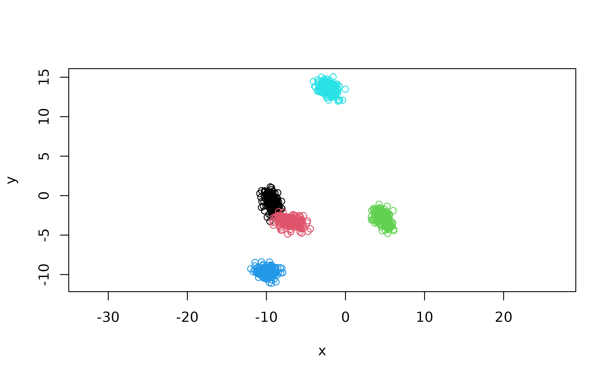

Setup clugenr development
Clone the package, cd into to the package’s folder and
start R:
$ git clone https://github.com/clugen/clugenr.git
$ cd clugenrDeveloping clugenr requires devtools, thus make sure it’s
installed before continuing. Open an R prompt at the
clugenr folder and install clugenr’s
development dependencies:
devtools::install_dev_deps()The package can be tested as follows:
devtools::test()There are four levels of testing, by increasing thoroughness (and
slowness): cran, ci, normal and
full. The first two run by default on CRAN and CI
environments, respectively. The third one, normal, is the
default mode when running the tests locally, and may take some time
(10-20 minutes). The last one, full is more thorough and
can take a few hours. It’s possible to define the tests thoroughness by
setting the CLUGENR_TEST_MODE environment variable. For
example, to simulate how tests would run in CRAN as follows:
Sys.setenv(CLUGENR_TEST_MODE = "cran")
devtools::test()
Sys.unsetenv("CLUGENR_TEST_MODE")The following instruction updates the documentation, then builds and checks the package locally:
devtools::check()It’s also possible to define the environment in which to run the tests when performing the check:
Sys.setenv(CLUGENR_TEST_MODE = "ci")
devtools::check()
Sys.unsetenv("CLUGENR_TEST_MODE")Create or update the generated documentation in man/,
file collation and NAMESPACE:
devtools::document()Build clugenr’s website (requires pkgdown, ggplot2, patchwork and
rgl):
pkgdown::build_site()
# Can also be done with devtools::build_site()
# In either case add option `preview = F` to avoid opening the browserInstall the package locally with:
devtools::install()Check that it works:
library(clugenr)
x <- clugen(2, 5, 800, c(-1, 1), 0.6, c(4, 6), 5, 0.4, 0.5)
plot(x$points, col = x$clusters, xlab = "x", ylab = "y", asp = 1)
Code style
To contribute to clugenr, follow the tidyverse style guide.
Some highlights include, but are not limited to:
- File encoding: UTF-8
- Indentation: 2 spaces (no tabs)
- Line size limit: 80 chars
- Newlines: Unix style, i.e. LF or
\n